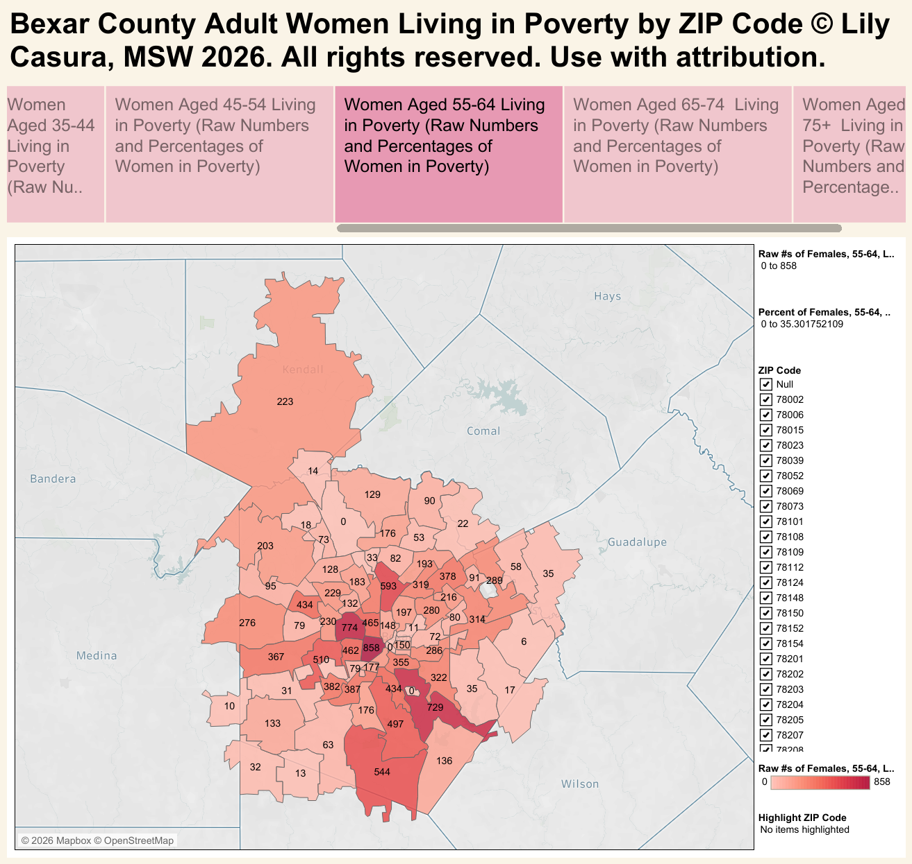

The interactive visualization opens on Tableau Public.
View interactive visualization on Tableau Public →Built Projects · Data Visualization
Bexar County contains San Antonio, often referred to as "the poorest large city" in America. Here, using American Community Survey (ACS) 2024 5-year estimates, we take a look at how poverty among often the poorest of the poor — senior women — is distributed across ZIP codes, including how it's affected by marital status: divorced, widowed, and never married.

The interactive visualization opens on Tableau Public.
View interactive visualization on Tableau Public →